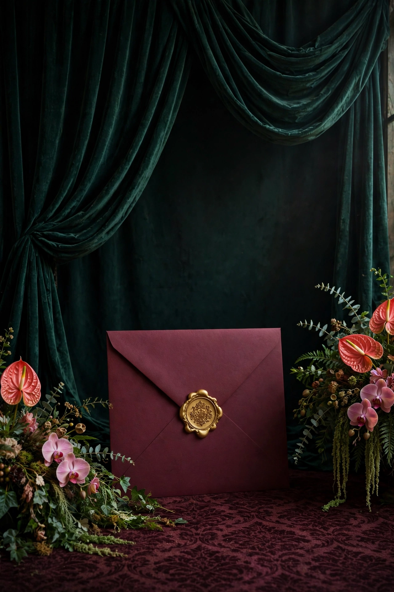
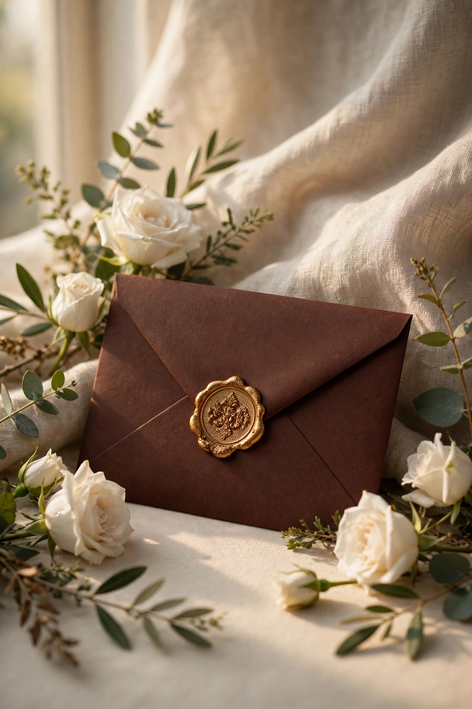
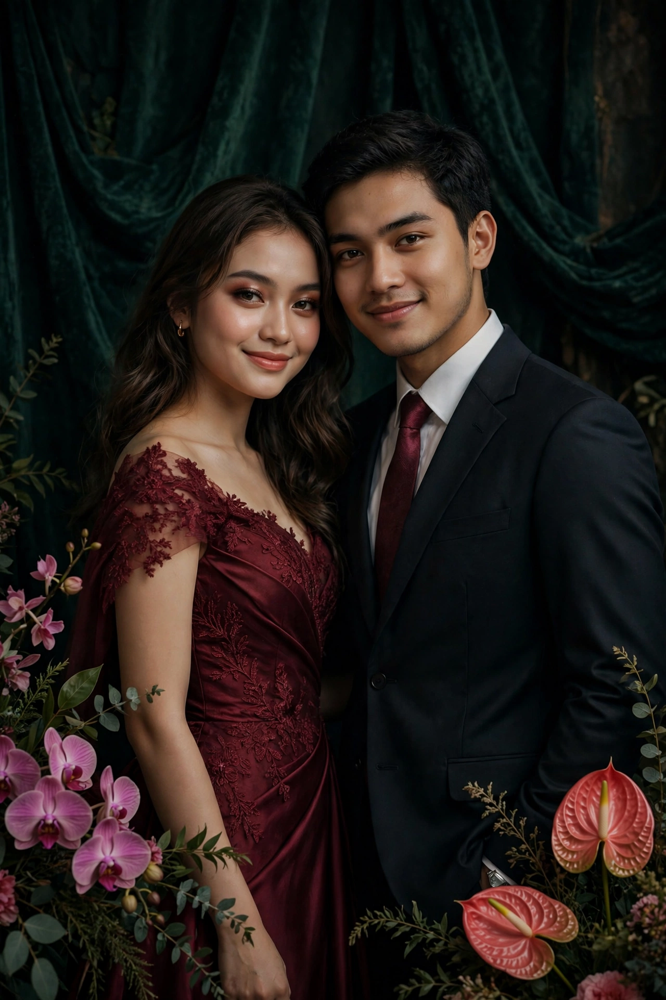
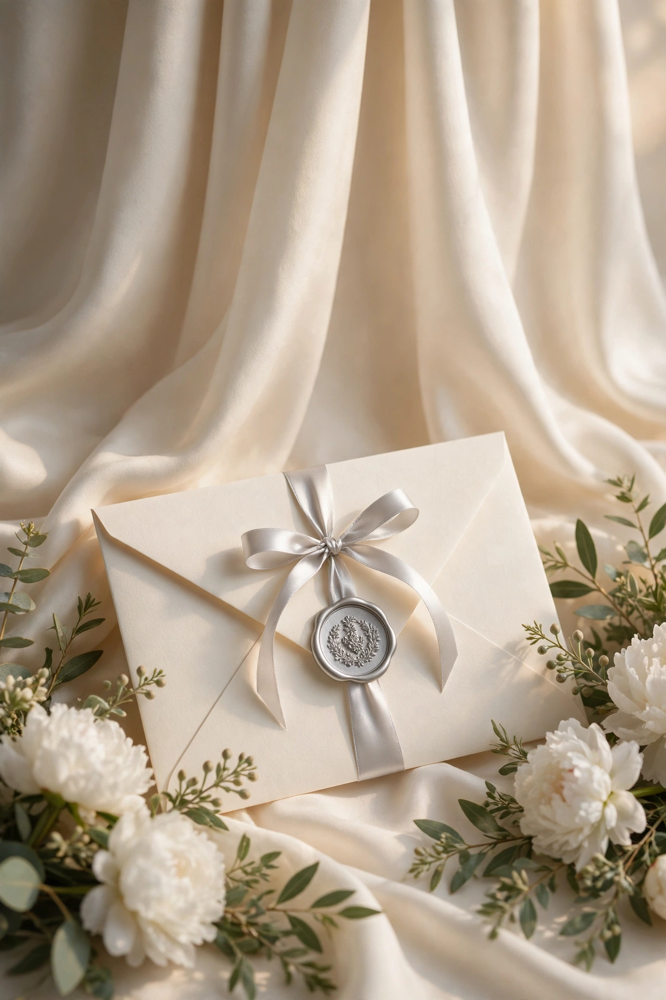
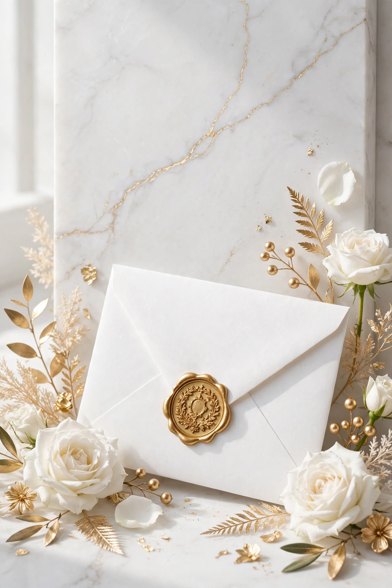
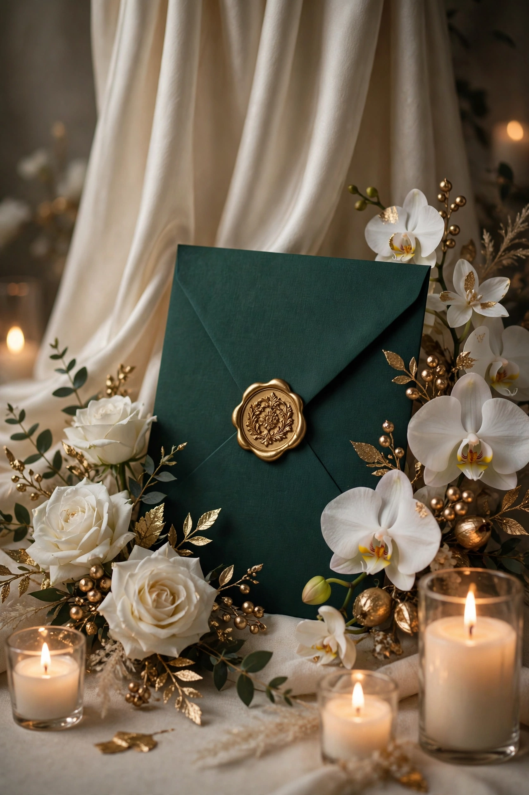
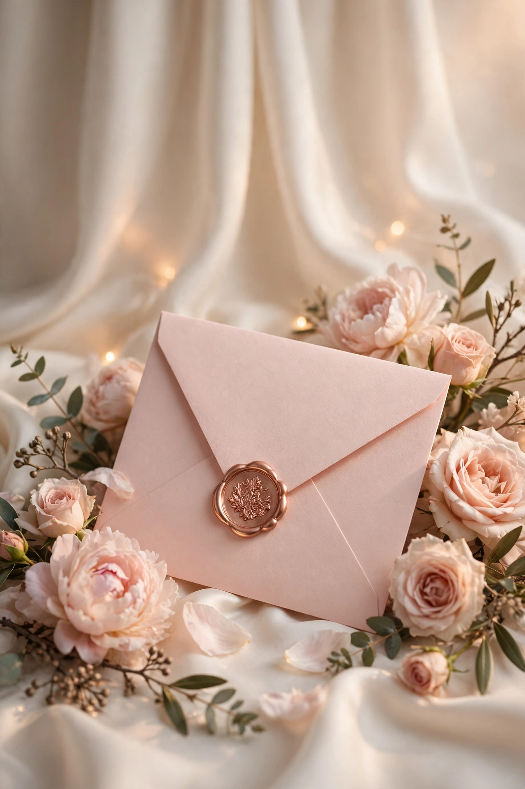
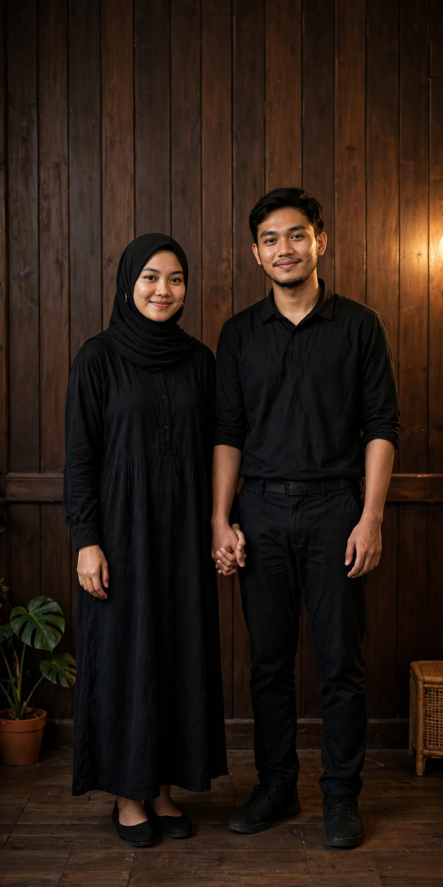

57 Tema Undangan, 57 Kepribadian
Dari amplop klasik bersegel lilin sampai doodle Gen Z — semua contoh memakai pasangan demo yang sama (Nadia & Raka, Sabtu 20 Maret 2027) supaya mudah dibandingkan. Klik tema untuk membuka undangannya.
Setiap tema premium tersedia dalam dua versi — dengan foto pasangan, atau tanpa foto mempelai (cocok untuk konsep syar'i & menjaga privasi — gambar dekorasi tema tetap tampil). Tombol ini mengganti versi contoh pada kartu tema premium bertanda ★.
Arunika Floral
Floral & Alam
Nuansa bunga lembut dan cahaya pagi — romantis, hangat, dan feminin.
Lihat Contoh →Klasik Jawa
Adat Nusantara
Palet cokelat sogan dan emas dengan pola kawung — sakral dan berkelas.
Lihat Contoh →Sage Minimal (Tanpa Foto)
Islami & Modern
Bersih, tenang, modern — tampil penuh tanpa satu pun foto pasangan.
Lihat Contoh →
04✦Nadia & RakaSamudra Burgundy
Amplop Klasik
Tirai emerald gelap, amplop burgundy, dan segel lilin emas terasa seperti undangan premium di galeri pernikahan.
★ Premium · Dengan FotoLihat Contoh →
05❀Nadia & RakaMahoni Klasik
Amplop Klasik
Kertas krem bertekstur dan amplop mahoni dengan mawar putih untuk kesan hangat, dewasa, dan tak lekang waktu.
★ Premium · Dengan FotoLihat Contoh →Samudra Malam
Amplop Klasik
Navy dalam dan emas tenang menghadirkan amplop malam yang formal, maskulin, dan berkelas.
★ Premium · Dengan FotoLihat Contoh →Hitam Emas
Amplop Klasik
Hitam pekat, garis emas tipis, dan tipografi kontras tinggi untuk pasangan yang ingin tampil tegas dan mewah.
★ Premium · Dengan FotoLihat Contoh →Blush Amplop
Amplop Klasik
Blush pink, krem susu, dan peony lembut untuk amplop romantis yang ringan dan feminin.
Lihat Contoh →Sage Amplop
Amplop Klasik
Amplop sage, krem, dan ranting eucalyptus untuk pernikahan taman yang tenang dan natural.
Lihat Contoh →Terracotta Hangat
Amplop Klasik
Terracotta, pasir, dan lengkung boho memberi rasa hangat khas pernikahan outdoor di sore hari.
Lihat Contoh →Lavender Senja
Amplop Klasik
Lavender abu dan krem pucat dengan bunga kering ungu untuk suasana senja yang dreamy.
Lihat Contoh →Joglo Jawa
Adat Nusantara
Ilustrasi atap joglo bertingkat, kayu cokelat, dan aksen emas untuk penghormatan pada arsitektur Jawa.
Lihat Contoh →Sunda Priangan
Adat Nusantara
Mega mendung berlapis, hijau Priangan, dan emas lembut menghadirkan keteduhan tanah Sunda.
Lihat Contoh →Minang Gadang
Adat Nusantara
Atap gonjong yang menjulang dan songket marun-emas memberi karakter Minangkabau yang megah.
Lihat Contoh →Batak Toba
Adat Nusantara
Strip ulos merah-hitam-putih dan ornamen geometris tegas untuk tema Batak yang berani dan berakar.
Lihat Contoh →Bali Kamasan
Adat Nusantara
Gerbang candi bentar, frangipani, dan palet putih-terracotta untuk nuansa Bali yang sakral dan artistik.
Lihat Contoh →Melayu Deli
Adat Nusantara
Kuning diraja, hijau zamrud, dan motif pucuk rebung menghadirkan kemuliaan Melayu yang cerah.
Lihat Contoh →Bugis Phinisi
Adat Nusantara
Layar phinisi, biru laut, dan kayu jati untuk kisah cinta yang berlayar jauh namun tetap pulang.
Lihat Contoh →Palembang Songket
Adat Nusantara
Merah songket, ungu tua, dan kilau emas rapat untuk kemewahan khas Palembang.
Lihat Contoh →Taman Ilustrasi
Ilustrasi & Playful
Taman warna-warni dengan lengkung bunga, kupu-kupu, dan siluet pasangan—terinspirasi undangan ilustrasi yang viral.
Lihat Contoh →
21♡Nadia & RakaDoodle Biru
Ilustrasi & Playful
Coretan tangan biru, hati besar, panah, dan bintang di atas putih—ringan, jujur, dan sangat Gen Z.
★ PremiumLihat Contoh →Bocah Menikah
Ilustrasi & Playful
Dua medali wajah kartun yang playful dengan calla lily marun—manis, sedikit messy, dan penuh personality.
Lihat Contoh →Cat Air
Ilustrasi & Playful
Semburat watercolor peach, lilac, dan teal yang menyebar lembut seperti lukisan tangan di kertas cotton.
Lihat Contoh →Senja Flat
Ilustrasi & Playful
Gradasi ungu-oranye, matahari besar, dan siluet pasangan untuk penutup hari yang sinematik.
Lihat Contoh →Potongan Kertas
Ilustrasi & Playful
Lapisan kertas pastel bertumpuk dengan bayangan lembut, seperti undangan handmade yang dipotong satu per satu.
Lihat Contoh →Komik Manis
Ilustrasi & Playful
Panel komik, halftone, speech bubble, dan garis tegas—kisah cinta yang diceritakan seperti strip favorit.
Lihat Contoh →Stiker Ceria
Ilustrasi & Playful
Bintang, hati, dan bunga bertepi putih tebal seperti stiker laptop—ceria, pop, dan mudah diingat.
Lihat Contoh →Peony Blush
Floral & Alam
Peony besar berwarna blush dan daun lembut untuk tema floral yang lebih lush dari Arunika.
Lihat Contoh →Tropis Monstera
Floral & Alam
Monstera hijau tua di atas krem dengan sentuhan emas—tropis, segar, dan tetap elegan.
Lihat Contoh →Rustic Kering
Floral & Alam
Pampas, bunga kering, dan kertas kraft untuk pernikahan rustic yang hangat dan membumi.
Lihat Contoh →Sakura
Floral & Alam
Kelopak sakura yang jatuh perlahan di palet pink pucat—lembut, bersih, dan sedikit bernuansa Jepang.
Lihat Contoh →Pesta Taman
Floral & Alam
Lampu gantung hangat di taman malam hijau—intim seperti resepsi outdoor di bawah bintang.
Lihat Contoh →Pantai Pasir
Floral & Alam
Pasir hangat, ombak aqua, dan matahari laut untuk pasangan yang menikah dengan angin pantai.
Lihat Contoh →Hutan Pinus
Floral & Alam
Pinus gelap, kabut krem, dan garis pegunungan untuk pernikahan yang tenang di dataran tinggi.
Lihat Contoh →Musim Gugur
Floral & Alam
Maple oranye, karamel, dan zaitun untuk musim gugur yang hangat meski acaranya di tropis.
Lihat Contoh →
36❦Nadia & RakaPita Krem
Elegan & Mewah
Amplop krem dengan pita satin perak yang seolah baru diikat—puncak minimalisme mewah ala referensi Sponsalia.
★ Premium · Dengan FotoLihat Contoh → 37◆Nadia & Raka
37◆Nadia & Raka
Art Deco Emas
Elegan & Mewah
Kipas deco, geometri simetris, dan hitam-emas ala pesta Gatsby tahun 1920-an.
★ Premium · Dengan FotoLihat Contoh →
38✦Nadia & RakaMarmer Putih
Elegan & Mewah
Marmer putih dengan urat abu halus dan garis emas tipis—dingin, bersih, dan sangat premium.
★ Premium · Dengan FotoLihat Contoh →
39♛Nadia & RakaZamrud Royal
Elegan & Mewah
Zamrud pekat, mahkota kecil, dan simetri klasik untuk tema royal yang tidak berlebihan.
★ Premium · Dengan FotoLihat Contoh →Biru Tengah Malam
Elegan & Mewah
Langit navy, bulan sabit perak, dan bintang kecil untuk malam resepsi yang syahdu.
Lihat Contoh →
41❀Nadia & RakaRose Gold
Elegan & Mewah
Gradasi rose gold metalik, mawar blush, dan krem susu untuk kilau feminin yang modern.
★ Premium · Dengan FotoLihat Contoh →Renda Doily
Elegan & Mewah
Oval renda putih di atas amplop burgundy dan tirai hijau—ayat suci menjadi pusat perhatian, seperti referensi Rafika Aulia.
Lihat Contoh →Vintage Sepia
Elegan & Mewah
Kertas sepia, bingkai oval, dan tipografi klasik seperti foto keluarga dari album lama.
Lihat Contoh →Geometri Islami
Islami & Modern
Bintang delapan, kubah sederhana, dan emerald-emas—syar'i, terstruktur, dan tanpa foto.
Lihat Contoh →Kaligrafi Emas
Islami & Modern
Arabesque halus dan ruang napas luas di atas pasir krem—kalem, sakral, dan tanpa foto.
Lihat Contoh →Tanpa Foto Putih Emas
Islami & Modern
Putih bersih, monogram emas besar, dan kartu doa—privasi terjaga tanpa kehilangan kemewahan.
Lihat Contoh →Tanpa Foto Hijau Botol
Islami & Modern
Hijau botol, krem, dan daun zaitun dalam komposisi tanpa foto yang teduh dan dewasa.
Lihat Contoh →Koran Retro
Islami & Modern
Headline koran pagi, kolom berita bahagia, dan aksen merah kecil—unik, witty, dan sangat shareable.
Lihat Contoh →Tipografi Berani
Islami & Modern
Nama mempelai raksasa memenuhi poster merah-krem—berani, editorial, dan anti-mainstream.
Lihat Contoh →Pastel Y2K
Islami & Modern
Gradasi lilac-pink-biru, stiker bintang, dan tipografi bulat—nostalgia Y2K yang tetap manis.
Lihat Contoh →Doodle Sage
Ilustrasi & Playful
Buku harian bernuansa sage & terakota — adem, earthy, kalem.
★ PremiumLihat Contoh →Doodle Mentega
Ilustrasi & Playful
Buku harian kuning mentega — cerah, hangat, penuh energi baik.
★ PremiumLihat Contoh →Doodle Merah Muda
Ilustrasi & Playful
Buku harian pink pastel & plum — manis, lembut, romantis playful.
★ PremiumLihat Contoh →Doodle Lavender
Ilustrasi & Playful
Buku harian lavender & ungu tinta — dreamy, lembut, beda dari yang lain.
★ PremiumLihat Contoh →Doodle Kraft
Ilustrasi & Playful
Buku harian kertas kraft cokelat — vintage, hangat, membumi.
★ PremiumLihat Contoh →Doodle Toska
Ilustrasi & Playful
Buku harian toska & mustard — segar, ceria, tropis playful.
★ PremiumLihat Contoh →
57❀Nadia & RakaKayu Manis
Floral & Alam
Undangan yang digerakkan foto: panel kayu gelap, script kuning hangat, foto kasual kalian jadi bintang utamanya — semua slot tinggal diganti foto sendiri.
★ PremiumLihat Contoh →